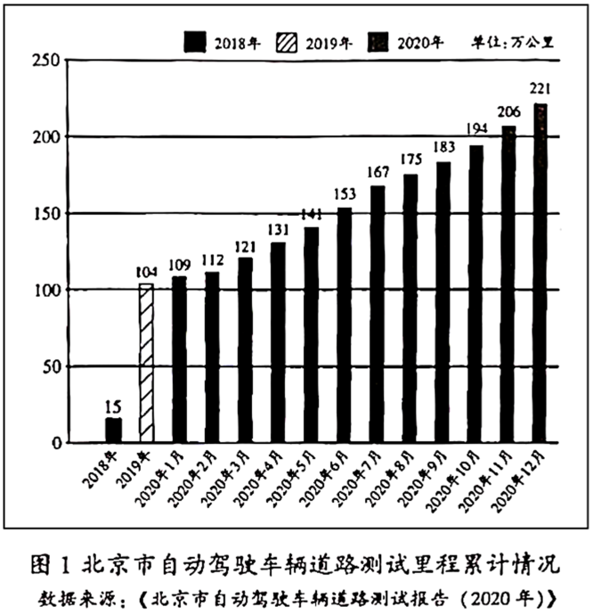
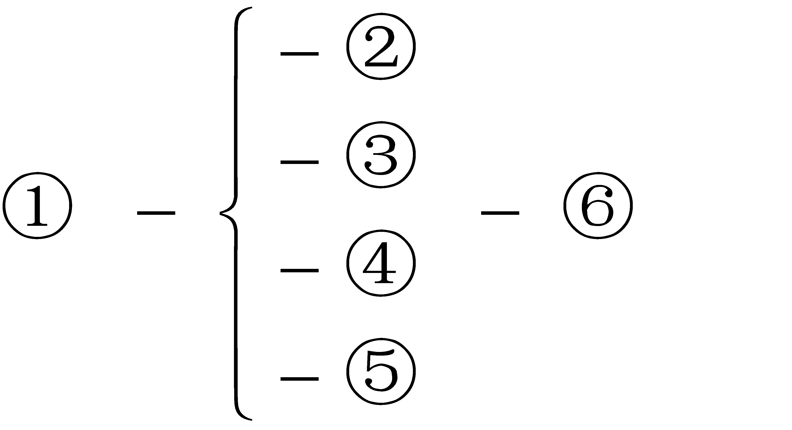
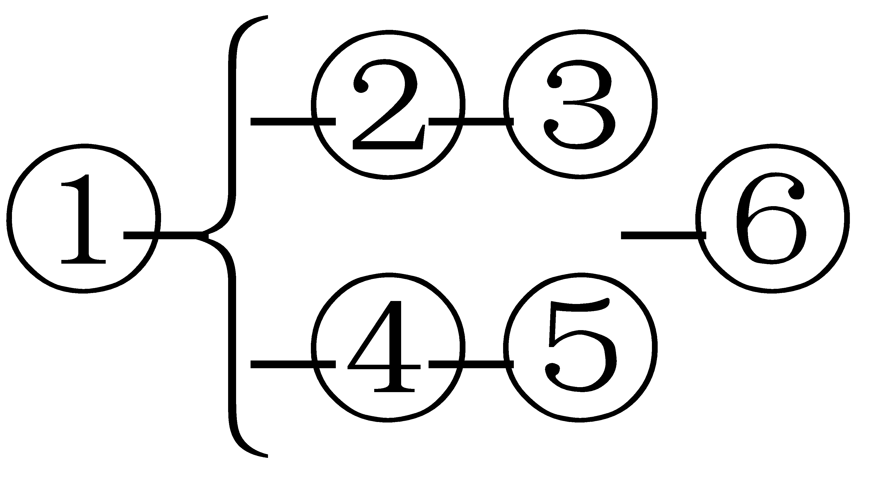
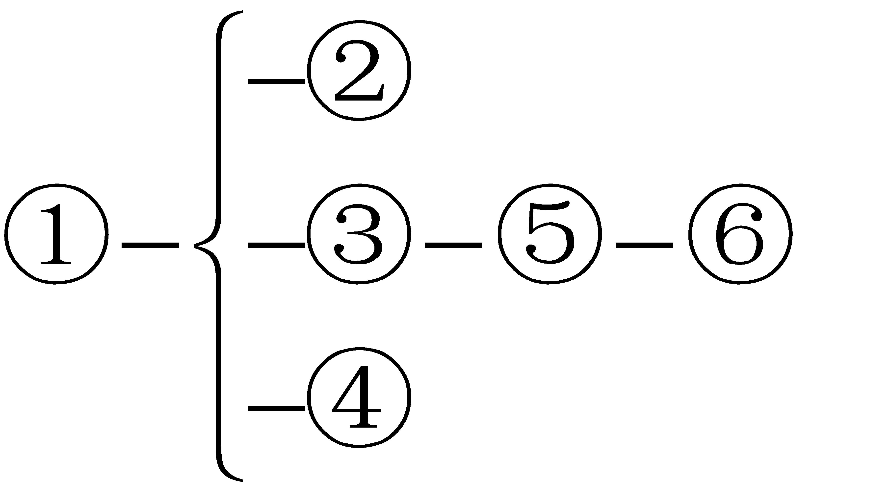

2021年北京市中考语文试题 · 现代文阅读 第12、13、14、15、16、17、18、19、20题
四、现代文阅读（共24分）
（一）
阅读下面材料，完成下面小题
【材料一】
2021年3月，《北京市“十四五”时期智慧城市发展行动纲要》正式颁布，到2025年，北京将建设成为全球新型智慧城市的标杆城市。
智慧城市是以5G、大数据、人工智能、区块链等一系列科技创新成果为基础的城市、其“智慧”体现在及时捕捉并报送信息、快速而精准地分析海量数据、迅速给出应对方案等方面。就像一个“智慧”的人，能通过感觉器官敏锐地获得信息，通过神经系统迅速传输给大脑，大脑马上作出判断并形成处理问题的策略。智慧城市的感觉器官是包括摄像头、传感器等在内的信息收集系统，神经系统是互联网等数字信息通道，大脑则是城市智能运营指挥中心。
建设智慧城市，能有效提高政务管理效能。比如，工作人员巡查时发现一处井盖损坏，打开“大城管”APP，拍照，上传井盖信息；网络后台调用城市大脑相关数据比对研判；处置单位收到工单，赴现场更换井盖。整个过程仅用三四个小时，而以前处理此类情况最快也要一天。
【材料二】
智慧城市强调技术，但不是被技术制约，而是人在利用技术，更是以人为中心，目的是为人们提供更广泛、更深入的服务。生活在智慧城市里，人们的生活会越来越便利。
智慧城市管理系统实现了“让数据多跑路，让人少跑腿”，办事减少了程序，节约了时间，也不再受地点的限制。近几年，“首都之窗”网站就提供了“上一网、交一表、找一人、办一次”的便民服务。北京交通行业政务服务也已经实现了“一网通办、全程网办、跨区协办、全市可办”，申请人可在任何地方上网办理业务，而不必跑到固定的办事地点。
建设智慧城市带来的便利还体现在能解决特殊时期的困难。新冠肺炎疫情期间，需要人们尽量少去人流密集的场所，这给需要就医的病人带来了困难。为此，北京市各区纷纷上线“智慧家医”远程服务，将问诊从线下转移到线上，医生通过在线交流提供就诊服务，有效减少了病人去医院就诊时交叉感染的风险。
【材料三】

在建设智慧北京的过程中，城市基础设施的智能化水平、整体数据治理能力日益提高，这样的条件自然会吸引众多高科技产业落地，从而促进数字经济的发展。
智能网联汽车是无需司机操作的自动驾驶汽车，该行业是未来产业发展的战略制高点。但汽车实现自动驾驶离不开智能化的道路、专用的信息网络等基础设施，换句话说，要发展“聪明的车”，得先建设“智能的路”。北京在道路智能化方面表现突出，因此在推进自动驾驶车辆上路测试方面进展迅速。2018年到2020年，____________。
正因为具备这些优势、2021年5月，北京成为全国首批“智慧城市基础设施与智能网联汽车协同发展”项目的试点城市之一。该项目对业内高端企业极具吸引力，将促进物联网、人工智能以及半导体等产业的快速发展，具有极大的经济价值。
未来，北京不仅有“聪明的车”“智能的路”，还有“新型的经济”，而“协同发展”项目不过是智慧城市中数字经济发展的一个例子。智慧的北京，一定比你想象的更美好。
12. 下列对“智慧城市”中“智慧”的理解，不符合文意的一项是（ ）
【甲】以获得科技创新成果为目的
 乙】及时捕捉信息并且快速上报
乙】及时捕捉信息并且快速上报
【丙】快速而精准地分析海量数据
13. 根据材料三的内容和图1的信息，下列在文中横线处填入的内容，准确的一项是（ ）
【甲】北京市智能化道路总里程数增加了二百多万公里
【乙】北京市自动驾驶车辆道路测试里程逐月缓慢增长
【丙】北京市自动驾驶车辆道路测试里程逐年快速增长
14. 从上述三则材料可以看出，建设智慧城市的好处有：①________、②_________、③________。（每空限10个字以内）
（二）
阅读下面的作品，完成下面小题。
①父亲是村里公认的棋王。农闲时总有人找父亲对弈。无论对方棋艺如何，父亲总是认真对待，经常让对方乘兴而来，又连输数盘败兴而去。母亲有时会劝父亲：“你就不能让着人家一点？这么不给人家面子，以后谁还理你！”父亲扬起眉毛说：“不给面子，找我下棋的人也没少，还越来越多呐！”
②我从小就被父亲带入讲智谋、拼勇气、权取舍的象棋世界。起初我分不清“马别腿”，也不懂各兵种的配合，一味追求杀得痛快，往往为了吃一个棋子而损失惨重，于是悔棋成了家常便饭。父亲尽管无奈，也只能苦笑着同意。等我完全学会规则，父亲的态度就变了。一次对弈前他严肃地跟我说：“从今天开始，我让子不让棋。让几个子、让什么子，你说了算，一旦开始下棋，你必须落子无悔，我也决不手软。”我嘴上应承，心里却不以为意。一阵拼杀，我的“将”被逼得走投无路，我又习惯性地悔棋，父亲坚决不同意。母亲没好气地说父亲：“跟个孩子较什么真，你让他一步不行吗？”父亲说：“那不行，棋有棋的道，下棋讲究个落子无悔，为啥？棋子落地，板上钉钉。现在我让着他，以后谁让着他啊！”母亲摇了摇头，只得转而安慰我：“咱不跟他玩了，就知道欺负孩子。”母亲的话像催泪弹，我的眼泪立刻涌了出来，我哽咽着对父亲说：“再也不跟你下棋了。”
③总角小儿撑不过两天，又求着父亲下棋。父亲欣然同意，但声明仍要落子无悔。父亲前两天说的那番话我听得懵懂，倒也隐约明白了，不敢再漫不经心。
④高三下学期，我开始变得焦虑。脑中经常出现同学们不眠不休学习的画面，我愈加烦躁。尽管强迫自己打起精神学习，最终我还是落榜了，感觉希望从此破灭了，整天把自己关在屋子里。父亲若无其事地说：“大小伙子哪能整天在家里睡觉啊，起来跟爸杀几盘。”我置若罔闻。父亲不肯罢休，一边摆棋一边说：“你说这些棋子，‘车’能疾行千里，‘马’可蹄踩八方，而小‘卒’只能一步一步挪动，为什么还需要小‘卒'呢？”我从未想过这个问题，又不好意思问。父亲看了看沉默的我说：“你可别看轻了小‘卒'，虽然它每次只能走一步，却只进不退。对弈搏杀，往往是一“卒'决胜负。你要是不服气，就来试试！”
⑤明知父亲用了激将法，我还是忍不住接了招。谁知一连下了五局，倒有三局栽在了小“卒”上。我盯着棋盘发愣，父亲笑着说：“意外吧？‘过河卒子当车使'，‘过河'对卒子来说是一道坎儿。你现在就是小‘卒’，没过去这道坎儿。怎么样？敢不敢再做一次小‘卒'？”我瞬间感觉自己灰暗的世界“仿佛若有光”，用力点了点头。
⑥我如愿考上理想院校。倏忽间十多年过去了，整日为工作和生活所累，回家探望父母的次数屈指可数。不料父亲突然大病一场，为照顾他，帮他进行康复训练，我把父母接到了身边。经过半年多的努力，父亲基本恢复了行动能力，只是记忆力大不如前。改善这种情况最好的办法就是让病人多动脑，我第一反应就是多陪父亲下棋。
⑦可是下棋时我才发现，以前那个“乡村棋王”不见了，此刻的父亲拿起棋子半天不知该落往何处。有一次我实在受不了，就发牢骚：“爸，跟您下棋真急死人！”父亲像个受了委屈的孩子一样，嗫嚅着说：“我不想走错了悔棋。”我突然想起当年父亲教我下棋的情景，不禁鼻子一酸。羞愧、难过、（ ），一起涌上心头。
⑧后来父亲拿起棋子不知道该放哪儿时，我就指给他一个可以吃到我棋子的地方，又假装懊悔地说：“哎呀，我太大意了。”父亲赢了我，总会露出开心的笑容，话也多起来。母亲背着父亲对我说：“我都能看出来你是让着他，你忘了当初他不让你了？”
⑨我笑而不答，心里说：当初他不让我，是教我守棋道，这里面是有“义”的啊！今天我让着他，正是以“义”报之。棋中不仅有道、有理，其实更有“义”……
（取材于风疏的文章）
15. 文章写了“我”跟父亲下棋的往事以及其中的人生感悟：儿时下棋，①______，让“我”懂得守信的处世之道；高考失利，父亲以小“卒”为喻激励“我”，让“我”明白了②______的道理；父亲生病后，③______，是因为“我”领悟到棋中更有“义”。
16. 如果要在第⑦段画线句的括号内再补充一个词，你会填写什么词？请结合文章内容简要说明理由。
17. 请从“棋义”和“棋王”中选择一个作本文的题目，并结合文章内容说明理由。
（三）
阅读下面的文字，完成下面小题。
①百花盛开，青春正好。中国共产党即将迎来百年华诞。我们当代青年学习中国共产党的光辉历史，不应该只把它当作书本上的记录、展览馆中的文物，还应该_____________。
②中国共产党在百年伟大实践中形成的红色基因，是一笔宝贵的精神财富。这笔精神财富里有实现中华民族解放、实现共产主义的远大理想。李大钊曾满怀信心地预言：“试看将来的环球，必是赤旗的世界！”中国共产党一经成立，就把实现共产主义作为党的最高理想和最终目标。这一远大理想凝聚起先进的力量，从一条红船出发，掀起了中国革命的巨浪。百年历程中，在为人民解放而奋斗的理想指引下，中华民族摆脱了被压迫、被奴役的悲惨命运。在为人民的美好生活而奋勇向前的信念指引下，中国创造出了持续、快速发展的奇迹。
③你也许会想，树立远大理想是成年之后的事情，作为未成年的学生，我们首先要考虑学习的问题，长大后再树立远大理想也不迟。其实，树立远大理想要趁早。青年，对未来充满热情，最肯学习，最少保守思想，最具有创造未来的能力。早一点树立远大理想，我们就能早一点唤醒自身的潜力。今天，守边卫国、开拓创业、扶贫攻坚、科学探索，到处都有青年奋进的身影。他们把自我追求与人民对美好生活的向往结合起来，将青春汇入了民族复兴的时代大潮。
④这笔精神财富里还有在艰难时世中勇于克服困难、敢于牺牲、淬火成钢的意志品质。“儿已决意以身许国！革命不成功，立誓不回家。”红军将领王尔琢写下最后的家书，用生命践行了誓言；“未惜头颅新故国，甘将热血沃中华。”抗日英雄赵一曼慷慨赴义，甘用自己的热血浸染中华土地。百年以来，无数的烈士为中国革命和建设事业献出了宝贵的生命。壮烈的牺牲，昂扬奋进的精神，铸就了人民当家做主的新中国。
⑤你也许会想，红色基因是艰难时世的产物，这种淬火成钢的意志品质对和平年代的我们有何价值？其实，从来没有什么一帆风顺，困难、压力、挑战甚至灾难常会出人意料地出现，而淬火成钢的意志品质正是战胜一切困难的法宝。在新冠肺炎疫情最严重的时候，“共产党员先上！”的口号奏响了“战疫””的强音。无数青年医护工作者、志愿者继承了革命先烈无畏、担当的精神，毅然决然地奔赴“抗疫”战场。将“红色”作为青春的底色，这些青年便有了面对各种困难的底气与力量。
⑥世界面临百年未有之大变局，面对各种机遇和挑战，广大青年需要树立为国为民的远大理想，始终葆有淬火成钢的意志品质。让“红色”成为青春底色，我们就能凝聚起实现“中国梦”的磅礴力量！
18. 根据你对全文内容的理解，结合上下文，在第①段横线处填写恰当的内容。
19. 下列关于文章①-⑥段结构关系的图示，正确的一项是（ ）
【甲】

【乙】
【丙】
20. 下面是无产阶级革命家、军事家关向应的有关材料。请你结合材料的内容和上面的文字，简要说明他身上具有哪种红色基因值得我们继承。
关向应在致叔父的家书中写道：“愿终身奔波，竭能力于万一，救人民于涂炭，牺牲家庭，拼死力与国际帝国主义者相反抗。”